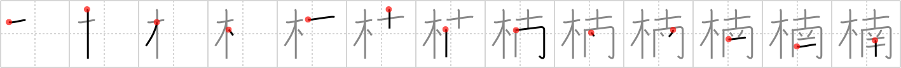

楠
← →
camphor tree

Reading:
On-Yomi: ナン、ダン、ゼン、ネン — Kun-Yomi: くす、くすのき
Heisig story:
Tree . . . south.
Koohii stories:
1) [ayoung24] 1-10-2006(230): We traveled to southern Japan just to see a camphor tree. It's what we came for.
2) [nolusu] 30-8-2007(65): Trivia: Cinnamomum camphora is native to Taiwan, southern Japan, southeast China and Indochina,.
3) [woelpad] 18-3-2008(27): Camphor tree + south = Southern Comfort (the liquor) tree (works for me).
4) [lifeflaw] 25-8-2009(15): Fact: The camphor is known for its effects on the man's sex drive and consequently it is used sometimes in the food served to soldiers. Story: you can think of the camphor tree as a tree that prevents happiness under the belt.
5) [zazen666] 4-10-2007(13): There is a tree in the south that legand has if you CAMP under it, you will be visited by a WHORE.